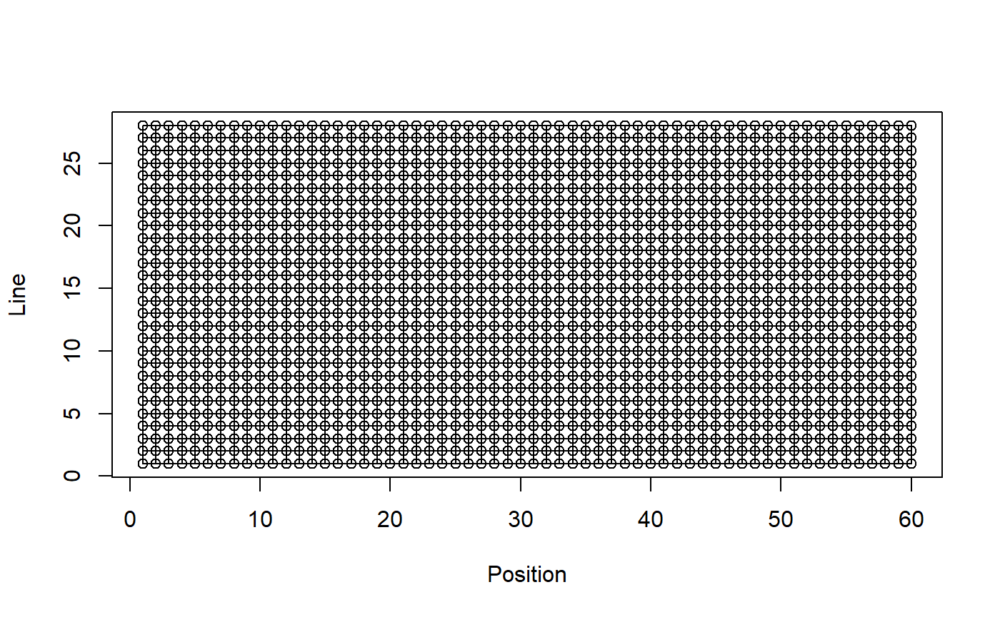
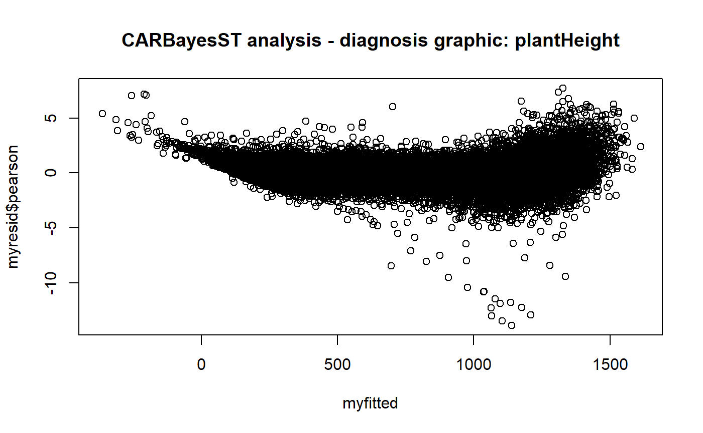
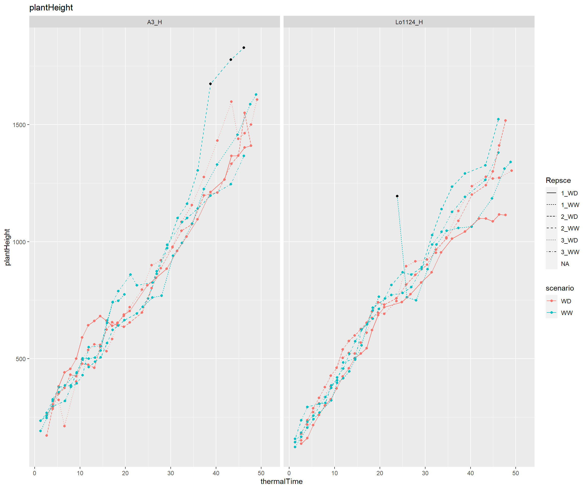

CARBayesSTReport.RmdDetection of outliers in time courses of an experiment in PhenoArch greenhouse. In this vignette, we use a toy data set of the openSilexStatR library (anonymized real data set).
Please, have a look on the names of the columns of the input data set. The function is not generic and needs specific columns names in the input data set:
The example is conducted on plantHeight parameter, we modelise the plantHeight taking into account the temporality (thermal time) and the spatiality (lattice structure) with a bayesian spatio-temporal ANOVA model [3].
To detect outlier points, we retrieve the standardised residuals computed by the model and a point is an outlier if abs(res) > threshold (here threshold==4). the user will be able to change this threshold.
We produced the output of the model as well as some graphics.
The input dataset must contain some predefined columns, have a look to the structure of mydata:
library(lubridate) library(dplyr) library(openSilexStatR) myReport<-substr(now(),1,10) mydata<-plant1 str(mydata)
## 'data.frame': 47022 obs. of 14 variables:
## $ Ref : Factor w/ 1680 levels "manip1_10_10_WW",..: 131 131 131 131 131 131 131 131 131 131 ...
## $ experimentAlias: Factor w/ 1 level "manip1": 1 1 1 1 1 1 1 1 1 1 ...
## $ Day : Factor w/ 42 levels "2013-02-01","2013-02-02",..: 3 4 5 6 7 9 9 10 11 12 ...
## $ potAlias : int 1 1 1 1 1 1 1 1 1 1 ...
## $ scenario : Factor w/ 2 levels "WD","WW": 2 2 2 2 2 2 2 2 2 2 ...
## $ genotypeAlias : Factor w/ 274 levels "11430_H","A310_H",..: 165 165 165 165 165 165 165 165 165 165 ...
## $ repetition : int 1 1 1 1 1 1 1 1 1 1 ...
## $ Line : int 1 1 1 1 1 1 1 1 1 1 ...
## $ Position : int 1 1 1 1 1 1 1 1 1 1 ...
## $ thermalTime : num 1.29 2.65 3.98 5.32 6.66 ...
## $ plantHeight : num 140 151 213 239 271 ...
## $ leafArea : num 0.018 0.019 0.0208 0.0222 0.0235 ...
## $ biovolume : num 0.253 0.62 1.201 1.68 3.396 ...
## $ Repsce : Factor w/ 15 levels "1_WD","1_WW",..: 2 2 2 2 2 2 2 2 2 2 ...A bayesian approach to model these data where the spatio-temporal structure is modelled via sets of autocorrelated random effets. Conditional autoregressive (CAR) priors and spatio-temporal extensions thereof are typically assigned to these random effects to capture the autocorrelation, which are special cases of a Gaussian Markov random Filed (GMRF) [3].
ST.CARanova() decomposes the spatio-temporal variation into 3 components:
we can add others factors (here the scenario (quali) …)
The spatio-temporal auto-correlation is modelled by a common set of spatial random effect and a common set of temporal random effects and both are modelled by the CAR prior (Conditional AutoRegressive).
Description of the results’s table:
Model fit criteria
In model’s comparison, the best fitting model is the one that minimises the DIC and WAIC but maximises the LMPL.
As the bayesian model can take a while, in this example, we initialise burnin=10 and n.sample=110 - not enough in real analysis!
# We suppress observations with missing data in time variable (here thermalTime) mydata<-filter(mydata,!is.na(mydata$thermalTime)) model<-fitCARBayesST(datain=mydata,xvar="thermalTime",trait="plantHeight",k=2, graphDist=TRUE,burnin=10,n.sample=110, formulaModel=as.formula(plantHeight~scenario+genotypeAlias),typeModel="anova",verbose=TRUE)
## [1] 22.35558
## Setting up the model.
## Generating 100 post burnin and thinned (if requested) samples.
##
|
| | 0%
|
|= | 1%
|
|= | 2%
|
|== | 3%
|
|=== | 4%
|
|==== | 5%
|
|==== | 6%
|
|===== | 7%
|
|====== | 8%
|
|====== | 9%
|
|======= | 10%
|
|======== | 11%
|
|======== | 12%
|
|========= | 13%
|
|========== | 14%
|
|========== | 15%
|
|=========== | 16%
|
|============ | 17%
|
|============= | 18%
|
|============= | 19%
|
|============== | 20%
|
|=============== | 21%
|
|=============== | 22%
|
|================ | 23%
|
|================= | 24%
|
|================== | 25%
|
|================== | 26%
|
|=================== | 27%
|
|==================== | 28%
|
|==================== | 29%
|
|===================== | 30%
|
|====================== | 31%
|
|====================== | 32%
|
|======================= | 33%
|
|======================== | 34%
|
|======================== | 35%
|
|========================= | 36%
|
|========================== | 37%
|
|=========================== | 38%
|
|=========================== | 39%
|
|============================ | 40%
|
|============================= | 41%
|
|============================= | 42%
|
|============================== | 43%
|
|=============================== | 44%
|
|================================ | 45%
|
|================================ | 46%
|
|================================= | 47%
|
|================================== | 48%
|
|================================== | 49%
|
|=================================== | 50%
|
|==================================== | 51%
|
|==================================== | 52%
|
|===================================== | 53%
|
|====================================== | 54%
|
|======================================= | 55%
|
|======================================= | 56%
|
|======================================== | 57%
|
|========================================= | 58%
|
|========================================= | 59%
|
|========================================== | 60%
|
|=========================================== | 61%
|
|=========================================== | 62%
|
|============================================ | 63%
|
|============================================= | 64%
|
|============================================== | 65%
|
|============================================== | 66%
|
|=============================================== | 67%
|
|================================================ | 68%
|
|================================================ | 69%
|
|================================================= | 70%
|
|================================================== | 71%
|
|================================================== | 72%
|
|=================================================== | 73%
|
|==================================================== | 74%
|
|==================================================== | 75%
|
|===================================================== | 76%
|
|====================================================== | 77%
|
|======================================================= | 78%
|
|======================================================= | 79%
|
|======================================================== | 80%
|
|========================================================= | 81%
|
|========================================================= | 82%
|
|========================================================== | 83%
|
|=========================================================== | 84%
|
|============================================================ | 85%
|
|============================================================ | 86%
|
|============================================================= | 87%
|
|============================================================== | 88%
|
|============================================================== | 89%
|
|=============================================================== | 90%
|
|================================================================ | 91%
|
|================================================================ | 92%
|
|================================================================= | 93%
|
|================================================================== | 94%
|
|================================================================== | 95%
|
|=================================================================== | 96%
|
|==================================================================== | 97%
|
|===================================================================== | 98%
|
|===================================================================== | 99%
|
|======================================================================| 100%
## Summarising results.
## Finished in 135.3 seconds.
## used (Mb) gc trigger (Mb) max used (Mb)
## Ncells 3640127 194.5 5514794 294.6 3640127 194.5
## Vcells 67023353 511.4 211491552 1613.6 67023353 511.4# print the result of the bayesian modelling printCARBayesST(modelin=model[[1]])
## Median 2.5% 97.5% Geweke.diag
## (Intercept) 787.2642 765.4750 808.5455 4.2
## scenarioWW 17.1584 12.7024 21.2535 -2.3
## genotypeAliasA310_H -17.1128 -100.8118 15.9892 -13.2
## genotypeAliasA347 -308.2343 -336.0703 -285.4268 -0.9
## genotypeAliasA347_H 0.3530 -22.2975 39.9733 -5.4
## genotypeAliasA374_H 49.8804 23.4013 81.5892 -1.3
## genotypeAliasA375_H 48.6928 -1.7951 82.9073 -10.0
## genotypeAliasA3_H 70.0313 40.1370 129.4914 -3.9
## genotypeAliasA554_H -65.4224 -126.1234 -46.2152 -2.6
## genotypeAliasAS5707_H 26.4615 -32.8861 48.9839 -9.4
## genotypeAliasB100_H 35.1038 -9.8359 68.0000 -3.6
## genotypeAliasB104_H -28.7811 -81.1432 4.8683 -3.1
## genotypeAliasB105_H -36.7509 -65.7417 -6.1058 -1.6
## genotypeAliasB106_H 52.7077 -7.1923 85.8706 -3.8
## genotypeAliasB107_H -49.9001 -109.5592 -13.5185 -4.0
## genotypeAliasB108_H 13.3206 -13.0709 79.9608 -3.4
## genotypeAliasB109_H 1.3358 -18.7673 51.1874 -3.4
## genotypeAliasB110_H -10.4441 -72.7632 19.1511 -16.5
## genotypeAliasB113_H 25.6186 -40.9659 55.1702 -19.4
## genotypeAliasB14a_H -81.2945 -136.4350 -56.3823 -8.3
## genotypeAliasB37_H -63.7214 -115.5620 -24.6365 -6.3
## genotypeAliasB73 -167.9673 -210.3308 -129.8990 1.7
## genotypeAliasB73_H 32.0370 1.8735 56.0238 -3.4
## genotypeAliasB73_SILK -31.4455 -75.1428 -3.5955 -8.1
## genotypeAliasB84_H 27.3541 -29.0859 55.2661 -3.1
## genotypeAliasB89_H -67.3010 -126.2116 -20.2069 -11.5
## genotypeAliasB97_H 87.1817 42.4897 106.4141 -6.5
## genotypeAliasB98_H -99.1116 -131.4799 -54.0616 -5.7
## genotypeAliasC103_H 13.9558 -14.7341 48.6163 -3.5
## genotypeAliasCO109_H 28.0575 -55.3944 63.0301 -4.1
## genotypeAliasCR1Ht_H 10.3156 -56.8953 37.2838 -6.6
## genotypeAliasD09_H 26.6965 -4.2612 70.2636 -4.4
## genotypeAliasDE811_H -80.9617 -130.3936 -49.7366 -3.8
## genotypeAliasDK2MA22_H 78.4992 53.4241 104.3640 0.5
## genotypeAliasDK4676A_H -54.4378 -86.4578 -8.3780 -2.2
## genotypeAliasDK78010_H -109.5270 -155.7522 -83.7934 -21.0
## genotypeAliasDK78371A_H 6.3331 -27.0276 35.3419 -2.6
## genotypeAliasDKFAPW_H -27.6823 -89.3085 2.2466 -2.3
## genotypeAliasDKFBHJ_H 21.6442 -18.5658 72.7749 -4.2
## genotypeAliasDKIBO2_H -12.9115 -52.1197 20.3258 -11.0
## genotypeAliasDKMBST_H 102.2840 34.1359 133.8410 -12.5
## genotypeAliasEA1027_H 47.7373 -8.9288 138.5852 -2.9
## genotypeAliasEA1163_H -36.6714 -73.8615 4.9153 -3.2
## genotypeAliasEA3076_H -20.1964 -53.7823 21.7204 -0.3
## genotypeAliasEC136_H -11.5772 -77.7523 13.5753 -5.6
## genotypeAliasEC140_H -76.8663 -111.7734 -3.1129 -2.1
## genotypeAliasEC151_H -73.8020 -103.1048 -25.7017 -4.9
## genotypeAliasEC169_H -12.8546 -38.4785 19.5345 -0.4
## genotypeAliasEC175_H -84.1317 -120.6979 -28.6879 -5.7
## genotypeAliasEC232_H -22.2541 -74.5070 15.2489 -8.6
## genotypeAliasEC242C_H 26.4056 -40.2165 70.3057 -6.6
## genotypeAliasEC334_H -66.4501 -112.7617 -26.9785 -6.9
## genotypeAliasEP10_H 47.5291 -7.9945 83.0621 -4.3
## genotypeAliasEP2008-18_H 29.8878 -4.2724 56.8338 -1.2
## genotypeAliasEP2008-22_H 21.7994 -33.8191 73.4564 -4.9
## genotypeAliasEP29_H -90.8223 -139.3523 -55.6662 -13.9
## genotypeAliasEP51_H -34.1300 -82.2074 -5.0454 -10.2
## genotypeAliasEP52_H 2.8387 -52.2650 57.0606 -5.2
## genotypeAliasEP55_H -134.1180 -181.2793 -92.7573 -5.7
## genotypeAliasEP67_H 1.8964 -30.9321 36.3239 -4.9
## genotypeAliasEP72_H 42.5978 2.4767 78.7752 -6.8
## genotypeAliasEP77_H 86.3887 29.4352 129.2738 -7.4
## genotypeAliasEZ11A_H -27.0148 -70.4981 11.7811 -9.9
## genotypeAliasEZ18_H 15.6676 -36.5002 71.4036 -4.4
## genotypeAliasEZ31_H 45.2744 -9.8881 71.7489 -11.5
## genotypeAliasEZ34_H -83.7921 -109.2732 -54.8587 -4.2
## genotypeAliasEZ35_H -16.3779 -42.6214 10.2840 -1.1
## genotypeAliasEZ36_H -39.9541 -72.1947 -15.2555 -2.0
## genotypeAliasEZ37_H -31.3517 -79.2644 6.8533 -10.1
## genotypeAliasEZ38_H -11.2449 -75.5257 30.6140 -8.8
## genotypeAliasEZ40_H -62.6286 -91.8782 -12.3577 -3.1
## genotypeAliasEZ42_H -59.7400 -94.0567 -22.8941 -1.3
## genotypeAliasEZ47_H 61.3148 16.0951 107.6894 -8.2
## genotypeAliasEZ48_H 1.5347 -37.2001 54.8281 -4.9
## genotypeAliasEZ53_H -65.7627 -90.5942 -23.9567 -3.9
## genotypeAliasEZ5_H 5.6238 -14.7094 29.4480 -3.4
## genotypeAliasF04401_H -44.3772 -80.0052 38.1579 -3.3
## genotypeAliasF04402_H -71.9194 -120.6326 -33.2162 -4.4
## genotypeAliasF04701_H -50.5062 -85.9260 -6.1468 -6.7
## genotypeAliasF04702_H -16.5750 -44.9705 22.6230 -5.6
## genotypeAliasF05101_H 70.3092 31.7259 106.7884 -4.5
## genotypeAliasF05404_H 42.4281 -11.4044 93.8055 -8.3
## genotypeAliasF1808_H -18.6209 -48.0822 50.6738 -3.5
## genotypeAliasF1890_H 45.0191 -8.8600 75.2189 -6.6
## genotypeAliasF218_H -19.6860 -72.1422 3.5340 -2.5
## genotypeAliasF252_H 54.7237 14.0188 87.3398 -3.4
## genotypeAliasF353 -112.4213 -144.9674 -81.3800 -4.0
## genotypeAliasF353_H 110.9630 80.6988 134.3647 1.2
## genotypeAliasF354_H -2.3152 -55.2266 35.0906 -1.7
## genotypeAliasF584_H -57.8714 -79.8075 3.0538 -1.3
## genotypeAliasF608_H 24.3247 -36.1144 66.0406 -6.0
## genotypeAliasF618_H -32.7869 -62.0251 20.3812 -2.9
## genotypeAliasF7001_H -5.9944 -67.6051 35.3666 -6.3
## genotypeAliasF7019_H 17.5794 -24.7728 52.9919 -7.0
## genotypeAliasF7025_H -23.0292 -82.5177 15.5705 -8.9
## genotypeAliasF7028_H 71.9489 20.1601 103.2715 -11.7
## genotypeAliasF7057_H 4.5164 -22.3566 58.9862 -7.8
## genotypeAliasF7058_H 17.4824 -25.8595 46.8880 -3.9
## genotypeAliasF7081_H 49.7084 12.5842 111.6214 -2.3
## genotypeAliasF7082_H 9.5158 -26.1544 38.6926 -1.9
## genotypeAliasF712_H 72.5627 2.7843 129.6773 -5.1
## genotypeAliasF748_H -48.3193 -112.4847 -18.8088 -5.0
## genotypeAliasF752_H -46.2591 -84.0633 6.4356 -3.0
## genotypeAliasF816_H 18.0971 -21.5249 48.3083 -2.7
## genotypeAliasF838_H -17.2200 -55.9736 21.7741 -3.8
## genotypeAliasF874_H 28.9739 -22.1845 57.7188 -3.1
## genotypeAliasF888_H 72.7152 -9.8547 111.6090 -8.9
## genotypeAliasF894_H -72.5752 -121.7904 -30.5781 -1.3
## genotypeAliasF908_H -39.5951 -76.7438 -6.5514 -3.6
## genotypeAliasF912_H 38.0450 -8.9893 84.0322 -6.2
## genotypeAliasF918_H -6.4351 -41.9954 19.7638 -2.9
## genotypeAliasF922_H 150.2525 90.8252 180.0870 -4.4
## genotypeAliasF924 -242.2975 -278.3659 -200.2474 -3.8
## genotypeAliasF924_H 44.6340 13.0874 65.8378 -2.1
## genotypeAliasF924_SILK -31.0564 -69.1717 8.1028 -4.2
## genotypeAliasF98902_H 81.0196 26.0740 113.0019 -2.0
## genotypeAliasFP1_H 48.8496 -12.8438 91.2020 -5.1
## genotypeAliasFR19_H -0.0252 -47.3652 43.9364 -4.4
## genotypeAliasH99_H 10.0758 -37.2454 63.2469 -5.2
## genotypeAliasHMV5301_H 83.8546 51.8080 127.0717 -4.0
## genotypeAliasHMV5325_H 25.5271 -23.4884 55.7089 -6.0
## genotypeAliasHMV5343_H -52.6573 -82.4229 -14.5733 -2.6
## genotypeAliasHMV5347_H 17.3792 -12.2650 74.7951 -0.7
## genotypeAliasHMV5405_H 49.8765 24.9145 74.1420 -4.2
## genotypeAliasHMV5409_H -79.0366 -112.4414 -40.3455 -2.9
## genotypeAliasHMV5422_H 20.6912 -33.3606 65.5302 -3.8
## genotypeAliasHMV5502_H -99.3697 -122.7650 -35.6036 -3.0
## genotypeAliasI198_H 10.1356 -32.2586 34.7627 -4.1
## genotypeAliasI205_H -103.9701 -170.8613 -61.6293 -8.9
## genotypeAliasI211_H 22.8327 -10.6970 63.6534 -1.5
## genotypeAliasI233_H -20.2747 -73.8312 27.4269 -3.8
## genotypeAliasI238_H -58.9022 -113.8706 -26.8604 -3.5
## genotypeAliasI242_H -33.2196 -77.2876 9.6885 -1.9
## genotypeAliasI261_H 2.0677 -35.4553 28.0417 -7.1
## genotypeAliasI267_H 69.8173 39.2624 98.6666 -10.1
## genotypeAliasIDT_H 3.3077 -35.4696 52.7136 -3.9
## genotypeAliasLAN496_H 2.0502 -34.7300 30.8380 -2.8
## genotypeAliasLH123Ht_H 27.5309 -12.2873 49.5173 -1.9
## genotypeAliasLH145_H -51.4517 -87.5673 -32.5586 -8.6
## genotypeAliasLH38 -180.0531 -205.9014 -152.0031 2.7
## genotypeAliasLH38_H 64.5896 26.0068 98.4339 -1.9
## genotypeAliasLH39_H 19.2001 -45.8872 58.5735 -8.0
## genotypeAliasLH59_H -24.7905 -53.6306 1.6579 -0.2
## genotypeAliasLH60_H -34.7411 -87.4931 -0.3954 -11.9
## genotypeAliasLH65_H -69.2339 -122.0758 -22.2384 -6.0
## genotypeAliasLH74_H -68.7705 -99.4551 -25.0727 -4.6
## genotypeAliasLH82_H -1.6593 -49.2356 23.1450 -2.9
## genotypeAliasLH93_H 30.4934 -16.8299 70.0720 -6.0
## genotypeAliasLo1016_H 17.5184 -14.7848 54.2706 -3.6
## genotypeAliasLo1026_H 8.9854 -28.8097 44.0170 -3.1
## genotypeAliasLo1035_H -9.3762 -53.7349 17.7883 -2.8
## genotypeAliasLo1038_H -52.3588 -84.7840 -22.6544 -9.8
## genotypeAliasLo1056_H 23.7609 -17.1086 89.5960 -2.8
## genotypeAliasLo1063_H -20.8802 -70.1792 21.4570 -8.6
## genotypeAliasLo1087_H -118.4098 -149.8661 -75.1092 -3.5
## genotypeAliasLo1094_H 41.0561 9.2124 66.4612 -1.4
## genotypeAliasLo1095_H 21.6745 -6.5995 67.1125 -2.0
## genotypeAliasLo1101_H -73.9849 -100.1062 -41.8264 0.4
## genotypeAliasLo1106_H -7.5522 -48.0536 22.0934 -5.2
## genotypeAliasLo1123_H -5.0525 -34.0641 43.2260 -2.4
## genotypeAliasLo1124_H 13.5186 -10.0180 55.0560 -2.2
## genotypeAliasLo1130_H -15.1460 -89.0422 15.6979 -5.1
## genotypeAliasLo1172_H 104.8658 46.3748 128.7201 -5.9
## genotypeAliasLo1180_H 31.2840 -4.4823 71.0332 -3.8
## genotypeAliasLo1187_H -47.9775 -82.2792 -22.2425 -4.9
## genotypeAliasLo1199_H -25.2661 -79.8679 10.0381 -17.1
## genotypeAliasLo1203_H -46.8126 -74.1554 1.9367 -4.3
## genotypeAliasLo1223_H 43.9046 2.2799 76.1968 -1.5
## genotypeAliasLo1242_H 13.5197 -52.6840 42.4074 -18.8
## genotypeAliasLo1251_H -22.4828 -73.5993 8.7549 -5.2
## genotypeAliasLo1253_H -14.3761 -56.9059 27.9046 -6.7
## genotypeAliasLo1261_H -79.5745 -119.9991 -33.7446 -1.3
## genotypeAliasLo1266_H 64.5437 33.4668 114.0248 -3.1
## genotypeAliasLo1270_H 60.6624 18.3202 96.2975 -2.0
## genotypeAliasLo1273_H 48.8644 20.7609 68.9950 -3.9
## genotypeAliasLo1274_H 105.7493 58.3235 152.5249 -5.7
## genotypeAliasLo1280_H 58.5579 24.5375 85.1080 -1.2
## genotypeAliasLo1282_H 43.3456 9.5762 86.7431 -4.1
## genotypeAliasLo1284_H 27.4248 1.7568 53.9335 -6.7
## genotypeAliasLo1288_H -40.2077 -92.2232 -7.0867 -5.7
## genotypeAliasLo1290_H 97.1657 45.3338 151.0728 -6.4
## genotypeAliasLo1301_H -19.9440 -45.4597 13.6475 -0.1
## genotypeAliasLo904_H -58.2832 -101.7796 11.4305 -4.3
## genotypeAliasLp5_H -17.5023 -64.5275 1.5592 -4.1
## genotypeAliasML606_H 56.8461 34.2445 115.1683 -1.0
## genotypeAliasMo15W_H 22.2821 -38.9411 60.8704 -4.8
## genotypeAliasMo17 -307.0321 -346.2711 -287.5834 -2.1
## genotypeAliasMo17_H 45.5204 9.6999 81.9052 -5.4
## genotypeAliasMS153 -117.7946 -150.0438 -89.4309 -3.8
## genotypeAliasMS153_H 55.6738 18.5317 78.6369 1.6
## genotypeAliasMS153_SILK 12.0584 -31.8349 37.4230 -4.6
## genotypeAliasMS71_H -51.2756 -95.2563 -10.7590 -1.1
## genotypeAliasN16_H -7.2214 -51.8131 52.3946 -5.4
## genotypeAliasN192_H -53.9120 -96.4361 -11.9793 -4.8
## genotypeAliasN22_H -80.0362 -115.1918 -53.6264 -1.3
## genotypeAliasN25_H -55.2809 -81.5830 -26.0425 -0.1
## genotypeAliasN6_H -7.1216 -71.4431 32.8085 -10.9
## genotypeAliasNC290_H -39.3779 -103.1419 15.4589 -7.6
## genotypeAliasNC358_H -16.0140 -78.0973 3.8914 -11.4
## genotypeAliasNDB8_H 16.0513 -18.5165 43.7199 -6.2
## genotypeAliasNK764_H -24.5402 -59.0520 14.4293 -4.2
## genotypeAliasNK807_H -6.0765 -43.6000 35.0530 -5.8
## genotypeAliasNQ508_H -6.1723 -40.3140 15.5985 -2.8
## genotypeAliasNS501_H 8.9303 -12.0398 54.2750 -3.0
## genotypeAliasNS701_H 51.1809 -25.3484 95.4257 -5.8
## genotypeAliasOh02_H 45.2824 -13.9389 93.5664 -9.7
## genotypeAliasOh33_H 3.6896 -30.0458 45.5976 -7.6
## genotypeAliasOh40B_H -49.0013 -93.3464 -1.1202 -5.1
## genotypeAliasOh43 -194.7583 -229.6814 -165.5329 -2.4
## genotypeAliasOh43_H 119.7630 71.6858 152.1232 0.4
## genotypeAliasOh43_SILK 52.8376 -5.9418 86.5757 -5.9
## genotypeAliasOs426_H -36.8232 -78.8879 -3.5180 -7.3
## genotypeAliasP465P_H -43.3619 -91.7903 -14.9669 -3.6
## genotypeAliasPa35_H -54.7709 -98.6137 -26.3780 -9.7
## genotypeAliasPa36_H -28.9923 -65.7452 11.1250 -2.9
## genotypeAliasPa374_H -9.3373 -51.9759 32.4940 -2.8
## genotypeAliasPa405_H -26.9630 -61.1801 26.1911 -2.6
## genotypeAliasPa91_H 60.6931 27.0205 99.4877 -2.8
## genotypeAliasPB116_H 26.2542 -43.3099 57.9185 -3.1
## genotypeAliasPB98TR_H -27.7404 -67.2080 19.9300 -4.1
## genotypeAliasPH207_H -76.7511 -128.4868 -42.3817 -6.3
## genotypeAliasPHB09_H -56.1052 -90.0036 -22.9991 -4.5
## genotypeAliasPHG35_H 37.7613 1.8860 88.5135 -5.2
## genotypeAliasPHG39_H 1.8668 -28.3407 38.3804 -5.1
## genotypeAliasPHG47_H 58.5870 -2.8500 92.2317 -6.4
## genotypeAliasPHG50_H 58.2351 14.3077 87.6539 -4.8
## genotypeAliasPHG71_H 53.6742 12.1960 91.1890 -4.2
## genotypeAliasPHG80_H -83.4816 -115.8229 -28.0914 -3.3
## genotypeAliasPHG83_H -82.7484 -108.2544 -37.5892 -3.3
## genotypeAliasPHG84_H 102.7884 63.0073 126.1189 -3.1
## genotypeAliasPHG86_H -55.9615 -82.9770 -10.4869 -2.9
## genotypeAliasPHH93_H 55.0881 18.0744 104.8876 -4.0
## genotypeAliasPHJ40_H 101.0525 62.6465 142.7966 -5.4
## genotypeAliasPHK29_H 22.5466 -0.3007 56.5569 -3.2
## genotypeAliasPHK76_H 17.1090 -24.8149 41.6147 -0.2
## genotypeAliasPHR36_H 99.6096 32.5191 127.5808 -7.7
## genotypeAliasPHT77_H 64.2647 18.6625 138.1450 -6.0
## genotypeAliasPHV63_H 28.6204 -11.3458 57.4583 -3.2
## genotypeAliasPHW65_H -11.9703 -49.0182 11.8234 -2.6
## genotypeAliasPHZ51_H 89.4985 47.5953 116.7164 -1.5
## genotypeAliasPP147_H 31.1918 -17.1983 72.8505 -3.5
## genotypeAliasSC-Malawi_H -8.7755 -41.4545 20.4052 -3.7
## genotypeAliasUH_2500_H -7.8587 -40.0067 20.6858 -5.2
## genotypeAliasUH250_H 79.1129 30.3227 108.3381 -4.2
## genotypeAliasUH304_H -57.1341 -82.6346 -26.9526 -3.6
## genotypeAliasUH_6102_H 34.7079 -30.6704 78.9424 -4.5
## genotypeAliasUH_6179_H -56.6615 -100.4458 -4.7959 -4.5
## genotypeAliasUH_P024_H -105.3414 -158.6299 -54.1996 -3.0
## genotypeAliasUH_P060_H 46.7698 -8.9832 98.9813 -6.1
## genotypeAliasUH_P064_H -6.9826 -51.6443 50.1190 -3.1
## genotypeAliasUH_P074_H -89.0670 -152.8508 -60.0120 -4.1
## genotypeAliasUH_P087_H -35.4492 -74.2338 1.5987 -7.7
## genotypeAliasUH_P089_H 18.3343 -24.4274 64.7408 -5.6
## genotypeAliasUH_P104_H 88.3184 59.1597 118.9531 -2.1
## genotypeAliasUH_P115_H 73.0569 42.2456 124.1748 -6.5
## genotypeAliasUH_P128_H 65.3565 16.6493 90.1281 -2.4
## genotypeAliasUH_P148_H -31.0938 -66.6614 2.9045 -2.5
## genotypeAliasUH_S018_H -43.3310 -70.7371 -20.3632 -5.6
## genotypeAliasUH_S020_H -22.5750 -74.5660 33.8848 -1.7
## genotypeAliasUH_S025_H 73.3983 31.9337 118.8468 -5.8
## genotypeAliasVa26_H 23.5370 -18.8404 51.8104 -2.7
## genotypeAliasW117 -167.4668 -213.6690 -137.6289 3.3
## genotypeAliasW117_H 113.0960 79.8761 140.7517 0.3
## genotypeAliasW153R_H -22.9897 -64.4361 30.9958 -5.1
## genotypeAliasW182E_H -6.3845 -50.6296 25.7512 -1.5
## genotypeAliasW23_H -2.5773 -37.9643 44.4178 -2.6
## genotypeAliasW602S_H 41.5020 -14.4163 70.0183 -7.8
## genotypeAliasW604S_H -41.2926 -77.2198 -16.5456 -1.1
## genotypeAliasW64A_H -72.0272 -104.6540 -2.9910 -2.0
## genotypeAliasW9 -495.1631 -521.3219 -471.4072 1.5
## genotypeAliasW95115_H 49.4220 13.9695 78.1194 -5.5
## genotypeAliasW9_H -74.2432 -118.8912 -39.4526 4.3
## genotypeAliasWf9_H 128.4139 80.1406 157.1673 -10.7
## genotypeAliasX061_H 59.1441 29.8133 105.4383 -2.3
## genotypeAliasX697_H -8.2401 -41.6525 19.3330 -5.8
## tau2.S 4995.4975 3539.1160 5786.1525 -2.9
## tau2.T 24089.2429 2503.1849 58863.9638 6.5
## nu2 6332.1847 6200.8013 9912.5656 2.7
## rho.S 0.5416 0.4528 0.6395 -1.7
## rho.T 0.8343 0.4762 0.9999 -6.9
## DIC p.d WAIC p.w LMPL
## 497486.588 2290.060 506994.998 8021.171 -250244.367
## loglikelihood
## -246453.234outtmp<-outlierCARBayesST(modelin=model[[1]],datain=model[[2]],threshold=4,trait="plantHeight")

The output report can be over-sized (more than 1Mb), for size of sub-directories in packages purposes, I choose to represent only the first genotypes…
mygeno<-as.character(unique(model[[2]][,"genotypeAlias"])) mygeno<-mygeno[1:6] for (i in seq(1,length(mygeno),by=15)){ myvec<-seq(i,i+14,1) plotCARBayesST(datain=model[[2]],outlierin=outtmp,myselect=myvec,trait="plantHeight",xvar="thermalTime") }

## R version 4.0.2 (2020-06-22)
## Platform: x86_64-w64-mingw32/x64 (64-bit)
## Running under: Windows 10 x64 (build 18363)
##
## Matrix products: default
##
## locale:
## [1] LC_COLLATE=French_France.1252 LC_CTYPE=French_France.1252
## [3] LC_MONETARY=French_France.1252 LC_NUMERIC=C
## [5] LC_TIME=French_France.1252
##
## attached base packages:
## [1] stats graphics grDevices utils datasets methods base
##
## other attached packages:
## [1] openSilexStatR_1.1.0 dplyr_1.0.0 lubridate_1.7.9
##
## loaded via a namespace (and not attached):
## [1] tidyr_1.1.0 splines_4.0.2 dotCall64_1.0-0 gtools_3.8.2
## [5] assertthat_0.2.1 expm_0.999-5 CARBayesdata_2.1 sp_1.4-2
## [9] stats4_4.0.2 yaml_2.2.1 LearnBayes_2.15.1 truncdist_1.0-2
## [13] pillar_1.4.6 backports_1.1.8 lattice_0.20-41 glue_1.4.1
## [17] digest_0.6.25 RColorBrewer_1.1-2 colorspace_1.4-1 plyr_1.8.6
## [21] htmltools_0.5.0 Matrix_1.2-18 pkgconfig_2.0.3 raster_3.3-13
## [25] CARBayesST_3.1 gmodels_2.18.1 purrr_0.3.4 scales_1.1.1
## [29] gdata_2.18.0 tibble_3.0.3 farver_2.0.3 generics_0.0.2
## [33] ggplot2_3.3.2 ellipsis_0.3.1 magrittr_1.5 crayon_1.3.4
## [37] deldir_0.1-28 memoise_1.1.0 evaluate_0.14 GGally_2.0.0
## [41] fs_1.4.2 nlme_3.1-148 MASS_7.3-51.6 foreign_0.8-80
## [45] truncnorm_1.0-8 class_7.3-17 data.table_1.13.0 tools_4.0.2
## [49] shapefiles_0.7 lifecycle_0.2.0 matrixStats_0.56.0 stringr_1.4.0
## [53] munsell_0.5.0 compiler_4.0.2 pkgdown_1.5.1 e1071_1.7-3
## [57] evd_2.3-3 rlang_0.4.7 classInt_0.4-3 units_0.6-7
## [61] grid_4.0.2 rstudioapi_0.11 htmlwidgets_1.5.1 spam_2.5-1
## [65] crosstalk_1.1.0.1 labeling_0.3 rmarkdown_2.3 SpATS_1.0-11
## [69] boot_1.3-25 testthat_2.3.2 gtable_0.3.0 codetools_0.2-16
## [73] reshape_0.8.8 DBI_1.1.0 R6_2.4.1 gridExtra_2.3
## [77] knitr_1.29 rgdal_1.5-12 rprojroot_1.3-2 spdep_1.1-5
## [81] KernSmooth_2.23-17 desc_1.2.0 matrixcalc_1.0-3 stringi_1.4.6
## [85] Rcpp_1.0.5 vctrs_0.3.2 sf_0.9-5 leaflet_2.0.3
## [89] spData_0.3.8 tidyselect_1.1.0 xfun_0.16 coda_0.19-3